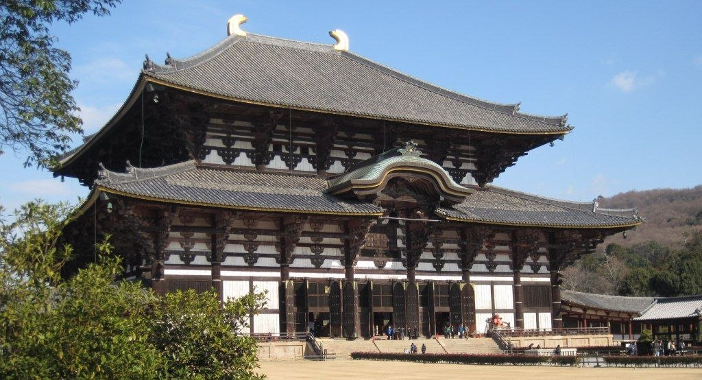
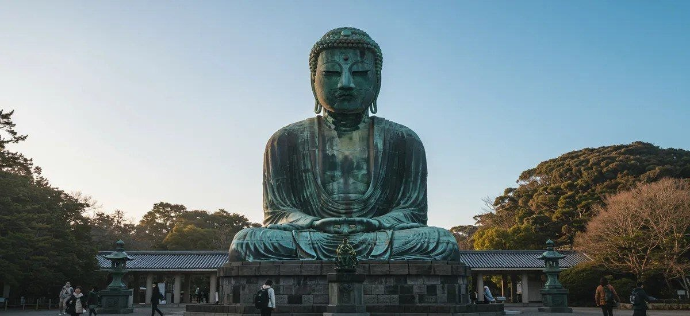
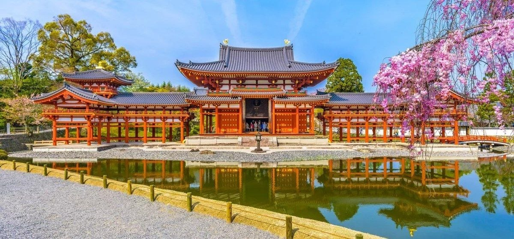
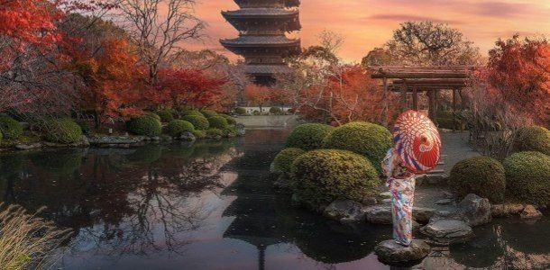
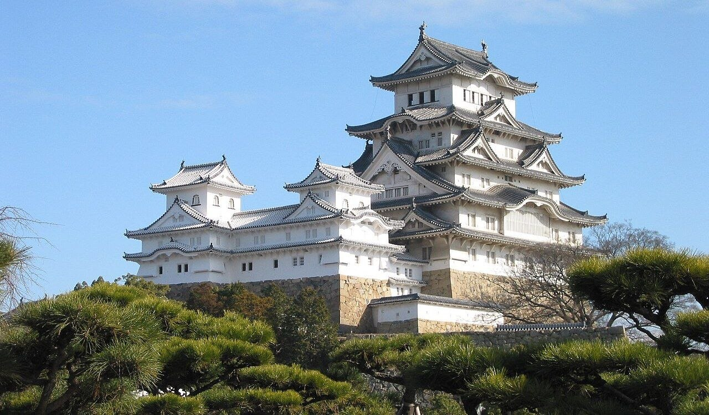
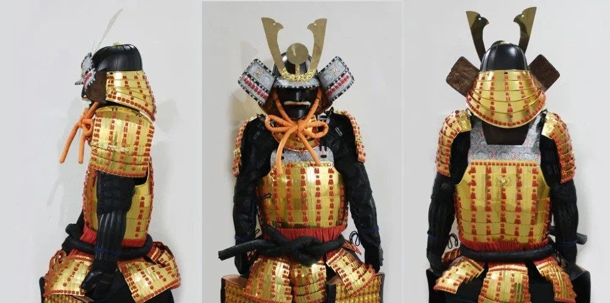

Становление и развитие японского государства
История Японии развивалась за счет усложнения внутренних институтов управления, адаптации внешнего опыта и формирования уникальной культуры. В отличие от континентальных государств, вынужденных вести постоянные внешние войны, Япония сосредоточилась на развитии внутренней структуры. В этом процессе ключевую роль сыграли три эпохи: Хэйан, Нара и Эдо. Каждый из этих периодов заложил важные основы, определявшие облик страны на протяжении столетий.
В начале VIII века японские правители приступили к созданию централизованного государства под прямой властью императора. Главным шагом стало строительство первой постоянной столицы — города Хэйдзё-кьо (Нара), спроектированного по образцу китайского Чанъаня. Страна была разделена на 66 провинций, управляемых чиновниками из центра. Вся земля признавалась собственностью государя, а крестьяне наделялись участками и выплачивали налоги продуктами и службой.
Жизнь простого населения в период Нара была суровой. Земледельцы ютились в полуземлянках и примитивных деревянных хижинах с земляным полом. Рацион крестьян состоял из проса, ячменя и репы, а собранный рис отправлялся в столицу. Знать жила в просторных усадьбах, питалась рыбой, дичью и пила саке. Одежда строго регламентировалась по рангам: аристократы носили шелк, а простолюдины — одежду из грубой пеньки.
Архитектура эпохи находилась под влиянием китайских технологий. Основным строительным материалом являлось дерево, покрываемое красным лаком. Здания возводились без металлических гвоздей с помощью сложной системы деревянных пазов (докумэ), обеспечивающей гибкость и сейсмостойкость построек. Крыши покрывались тяжелой глиняной черепицей, а сами строения устанавливались на каменных фундаментах.
Военная организация строилась на основе всеобщей повинности. Каждое крестьянское домохозяйство выделяло одного мужчину для службы в провинциальном полку. Ополченцы сами обеспечивали себя провизией, снаряжением, простыми луками и прямыми мечами тёкуто. Войско отличалось низкой дисциплиной, из-за чего крестьянская пехота регулярно терпела поражения в стычках с северными племенами эмиси.
Отливка гигантской статуи Будды (Дайбуцу) в храме Тодай-дзи потребовала 500 тонн бронзы и золота, истощив государственную казну. Влияние монаха Докё едва не привело к захвату им престола. В 735–737 годах эпидемия оспы унесла треть населения страны. В этот период были составлены первые летописи «Кодзики» и «Нихон сёки», а также поэтический сборник «Манъёсю».


В 794 году столицу перенесли в Хэйан-кьо (Киото), чтобы ослабить влияние монастырей. Политическая система характеризовалась отходом от прямого императорского правления. Реальный контроль над страной захватил аристократический род Фудзивара. Главы клана выдавали дочерей за императоров, становились регентами (сэссё) и канцлерами (кампаку) при юных правителях и полностью контролировали гос. аппарат.
Для придворной аристократии (кугэ) жизнь превратилась в ритуал. В моду вошел культ утонченной красоты и любования природой (моно но аварэ). Идеалом считались длинные черные волосы, белоснежная кожа, сбритые брови и зачерненные зубы. Знать носила многослойные кимоно дзюнихитоэ весом более 15 кг, а общение происходило через бамбуковые ширмы путем обмена поэтическими записками.
В Хэйане сформировался стиль дворцовых усадеб синдэн-дзукури. Главный корпус соединялся крытыми галереями с павильонами, образуя внутренний двор с прудом и мостиками. Стены внутри домов делались раздвижными (перегородки сёдзи), что позволяло менять планировку. В отличие от эпохи Нара, тяжелая черепица уступила место крышам из легкой коры японского кипариса.
Правительство отказалось от неэффективного крестьянского ополчения. Для защиты частных поместий (сёэнов) и борьбы с разбоем богатые кланы начали формировать отряды профессиональных воинов, из которых зародилось сословие самураев. Основу их тактики составлял конный бой с луком (юми) и в доспехах о-ёрой. Тогда же прямой меч уступил место изогнутому клинку тати.
Дама Мурасаки Сикибу написала «Повесть о Гэндзи» — шедевр литературы и первый роман в истории. Изобретение слоговой азбуки кана позволило отказаться от полного копирования китайских иероглифов. Чтобы ограничить власть клана Фудзивара, императоры добровольно отрекались от престола, уходили в монастырь и оттуда управляли страной в статусе экс-императоров (инсэй).


После междоусобных войн полководец Токугава Иэясу объединил страну и основал военное правительство — сёгунат (бакуфу). Политическим центром стал город Эдо (Токио), пока император оставался в Киото духовным символом. Управление строилось на строгом контроле князей (даймё), обязанных жить в Эдо по системе санкин котай, оставляя семьи в столице в качестве заложников.
Общество разделялось на четыре сословия: самураи, крестьяне, ремесленники и купцы. Самураи занимали высшую ступень и носили два меча, но без войн превращались в чиновников. Горожане и купцы богатели и развивали культуру театров и развлечений. Крестьяне выплачивали тяжелые налоги рисом, им запрещалось менять профессию, переезжать и носить шелк.
Период Эдо отмечен расцветом замковой архитектуры и быстрым ростом городов. Замки князей превратились в неприступные комплексы с многоярусными башнями (тэнсю), каменными рвами и высокими стенами, устойчивыми к артиллерии. Столица Эдо превратилась в мегаполис с населением свыше миллиона человек, со сложной системой каналов, водопроводов и противопожарных улиц.
Военное дело пережило глубокую трансформацию. Потеряв необходимость вести бои, самураи систематизировали опыт в этический кодекс Бусидо («Путь воина»). Главным символом самурая стала пара мечей (дайсё — катана и вакидзаси). Боевые искусства превратились в дисциплины самосовершенствования: массово открывались школы фехтования, стрельбы и борьбы.
Японцам под страхом смерти запрещалось покидать страну, а иностранцам — въезжать. Единственным окном в мир оставался остров Дэдзима в Нагасаки. Политика изоляции (сакоку) обеспечила 250 лет мира. В этот период возникли нигири-суши, цветная гравюра укиё-э, поэзия хайку и театр Кабуки.


Каждая из трех эпох внесла уникальный вклад в становление японского государства, сформировав его политическую, культурную и социальную основу.
Эпоха заложила правовой и административный фундамент страны. Япония обрела постоянную столицу, централизованную систему управления провинциями и первые исторические хроники. Буддизм стал духовным стержнем общества, а масштабное храмовое строительство сформировало традиции японской деревянной архитектуры.
Период подарил стране национальную культурную идентичность. Создание слоговой азбуки кана привело к расцвету литературы. Сформировались утонченные эстетические идеалы, традиционный архитектурный стиль усадеб и уникальные формы этикета, а также зародилось сословие самураев.
Двухвековая изоляция и период мира позволили сформировать развитую городскую инфраструктуру, сеть дорог и финансовую систему. Эпоха подарила миру главные символы страны: гравюру укиё-э, театр Кабуки, поэзию хайку, кодекс Бусидо и традиционную кухню, а сама столица Эдо была переименована в Токио в 1868.
В комплексе наследие этих трех эпох создало сверхпрочную национальную систему, сформировавшую экономическую, социальную и институциональную базу для стремительного технологического рывка Японии в XIX веке.